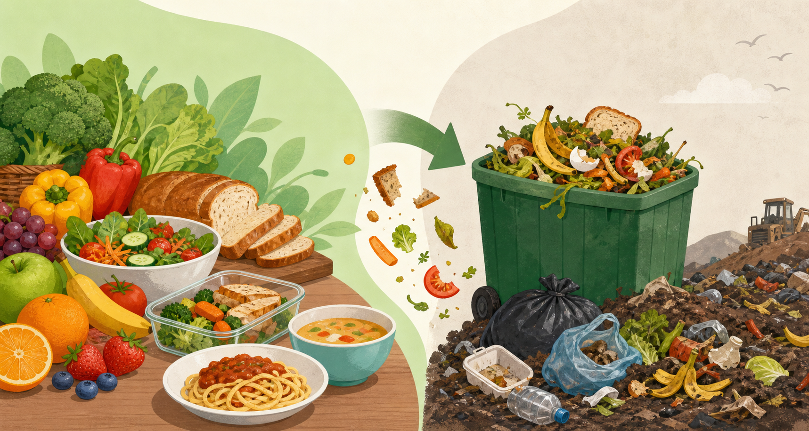

Nutrients are lost
Wasted food can contain vitamins, minerals, fibre, and protein. Fruits, vegetables, whole grains, milk products, and lean proteins are all examples of nutritious foods that may be wasted.
HFC3M/HFA4U Food & Nutrition
Food waste is not only about throwing food away. It also means losing the water, land, energy, money, and nutrition that were used to produce that food.

Food waste happens when food that could still be eaten is thrown away or left unused. It can happen at home, in grocery stores, restaurants, farms, and food factories. The problem is serious because edible food is lost while many people still struggle to get enough healthy food.
Globally, food loss and waste affects food security, nutrition, and the environment. FAO explains that food loss and waste are also connected to greenhouse gas emissions and the pressure placed on natural resources (Food and Agriculture Organization of the United Nations, n.d.).
Wasted food can contain vitamins, minerals, fibre, and protein. Fruits, vegetables, whole grains, milk products, and lean proteins are all examples of nutritious foods that may be wasted.
When fresh food is wasted, families may spend more money replacing food or rely more often on cheaper ultra-processed foods. These foods are often higher in added sugar, sodium, and unhealthy fats.
Over time, poor food choices can increase the risk of nutrient deficiencies, obesity, type 2 diabetes, and heart disease. Reducing food waste can help people use more of the nutritious food they already buy.
Food waste can make food insecurity feel worse because safe food is discarded while some families cannot afford enough nutritious meals. It also wastes household money, especially when groceries are expensive.
Local food banks and community programs may need more donations while stores, restaurants, and households throw away food that could have been used safely. This creates a mismatch between extra food and people who need food.
In the United States, food is a major part of landfill waste. EPA reports that wasted food is responsible for a large share of methane emissions from landfills, and methane is a powerful greenhouse gas (U.S. Environmental Protection Agency, n.d.-a).
A realistic solution is for households to reduce food waste through a simple routine: plan meals, store food correctly, and use leftovers. This is practical because individuals and families can start doing it without waiting for a new law or expensive program.
Plan meals for the week and make a shopping list before buying food.
Refrigerate, freeze, and use containers so food stays safe longer.
Eat leftovers, cook smaller portions, and use older food first.
This solution improves nutrition and health because families are more likely to eat the fresh foods they already bought instead of replacing them with less nutritious convenience foods. FDA also recommends planning, proper storage, and careful use of food as ways to cut food waste while maintaining food safety (U.S. Food and Drug Administration, n.d.).
Responsible group: individuals, families, and households.